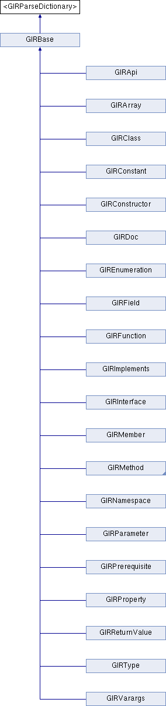

CoreGTKGen
3.22.0
CoreGTKGen is a utility that generates Objective-C language bindings for CoreGTK using GObject Introspection
Instance Methods
|
List of all members
<GIRParseDictionary> Protocol Reference
Inheritance diagram for <GIRParseDictionary>:

Instance Methods
(void)
-
parseDictionary:
The documentation for this protocol was generated from the following file:
GIRBase.h
Generated on Sat Nov 4 2017 23:23:30 for CoreGTKGen by
1.8.13
 1.8.13
1.8.13